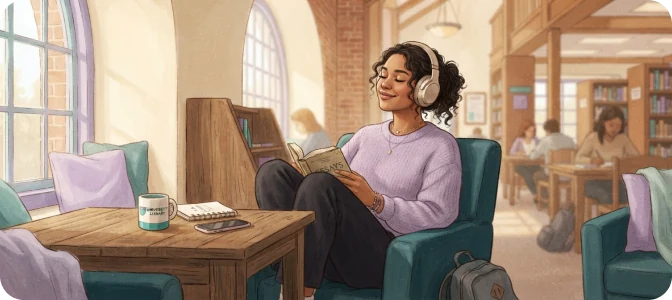

Organiza tu semana sin llenarla de más
Ordena pendientes, define prioridades y elige un primer paso de menos de diez minutos.
Herramientas para tu día a día
Explora ideas prácticas para organizarte, descansar y acompañar lo que sientes durante tu vida universitaria.

Un método amable para ordenar lo urgente, elegir un primer paso y recuperar sensación de avance.
Para guardar, imprimir o completar
Tres herramientas breves con pasos claros y hojas de trabajo. Cada guía se puede leer en web o descargar en PDF.
Ordena pendientes, define prioridades y elige un primer paso de menos de diez minutos.
Sigue una pausa guiada de tres minutos y registra qué necesitas antes de continuar.
Separa lo que puedes hacer, el apoyo que necesitas y tu plan para las próximas 24 horas.
Elige una idea que se adapte a lo que necesitas hoy.
No pudimos consultar el catálogo.
Prueba con otra palabra o elimina algún filtro.